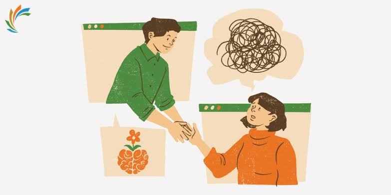
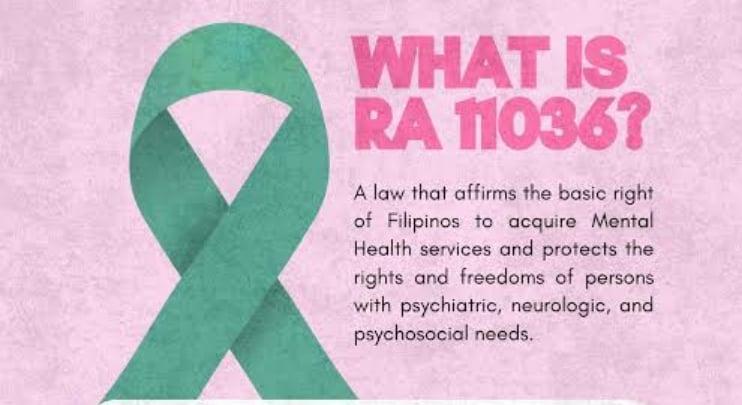

Breaking the silence: mental health and students
By Jared Victor Basilio, from 11-Gates
The problem is bigger than we think
The World Health Organization (2022) reports that about one in eight people worldwide lives with a mental disorder. Anxiety and depression are among the most common. These numbers remind us that mental health struggles are not rare or unusual. They are part of ordinary human life.
Students face their own pressures: exams, expectations from family, social media comparison, and uncertainty about the future.
 images/part1.jpgPut your JPG here with this exact name
images/part1.jpgPut your JPG here with this exact nameWhy many people stay silent
Stigma is the belief that having a mental health problem is a weakness. It makes people hide what they feel and delay asking for help. Words like “drama” or “just be strong” may seem harmless, yet they can close the door on someone who is hurting.
Warning signs can include constant sadness, withdrawing from friends, big changes in sleep or appetite, and losing interest in things once enjoyed.
“There is no health without mental health.”
A widely shared message of mental health advocates
The effects on daily life
When stress and sadness are ignored, they can lower focus in class, strain friendships, and affect energy and physical health. Over time, the effects can reach the whole family and community.
The good news is that support works. Talking to someone, building healthy routines, and getting professional care can make a real difference.

images/part3.jpgPut your JPG here with this exact nameWhat the Philippines is doing
The Philippine Mental Health Act (Republic Act No. 11036) was signed in 2018. It aims to make mental health services more available and to protect the rights of people with mental health conditions. Laws help, but change also needs people who listen and care.

images/part4.jpgPut your JPG here with this exact name